Describe the water balance at a surface-atmosphere interface.
Explain how the surface water balance is linked to the energy balance.
Know what are water inputs, outputs and stores within vegetation canopies.
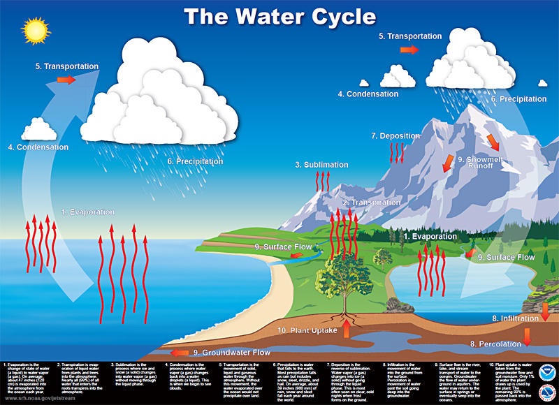
Evapotranspiration
Precipitation
Mass Balance of Drainage Basins
In hydrology, we use mass conservation for water:
Input
Precipitation P
Output
Evapotranspiration E
Run off R
Internal mass change
Storage change \(\Delta S\)
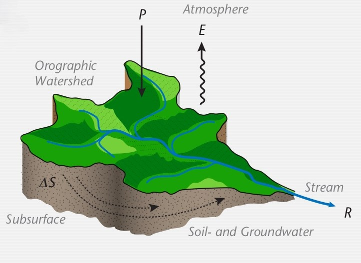
Land-Atmosphere Water Balance
Components can be considered as mass flux densities:
Volume of water per unit ground area \(\rm{m}^3 \ \rm{m}^{-2} \ \rm{s}^{-1}\)
Equivalent to depth of water \(\rm{mm} \ \rm{h}^{-1}\)
\[
P = E + I + \Delta R + \Delta S
\]
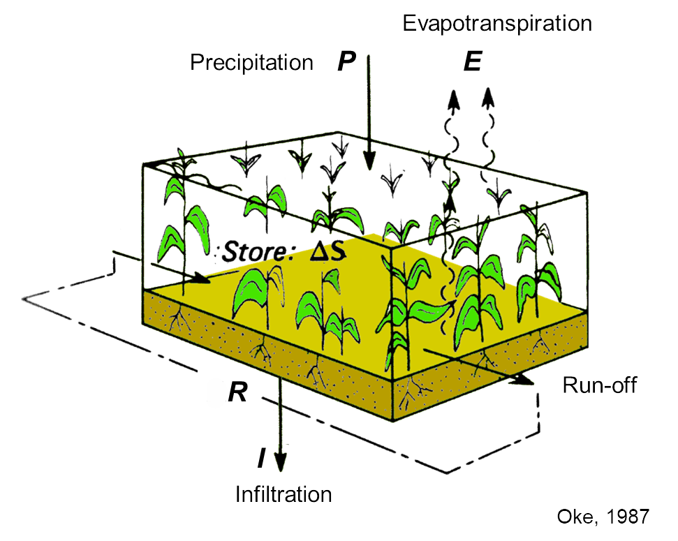
Evapotranspiration
Latent heat flux \(LE\) (in \(\rm{W} \ \rm{m}^{-2}\)) and evapotranspiration \(E\) (in \(\rm{mm} \ \rm{s}^{-1}\)) are linked by the latent heat of vaporization:
\[
LE = L_v E
\qquad(1)\]
You might notice then, that we can also define \(E\) as:
\[
E = \overline{w^{\prime}\rho_v^{\prime}}
\qquad(2)\]
Water Balance as a Climate Index
We can use two ratios as climatic indices:
Run-off ratio (\(\frac{R}{P}\))
Evaporation ratio (\(\frac{E}{P}\))
For similar annual precipitation and similar \(R_n\), the annual Bowen ratio (β = H / LE) increases as R/P increases and E/P decreases.
Table 1: Runoff and evaporation ratios for selected ecosystems
Ecosystem
R P
E P
Tundra
> 0.7
< 0.3
Forest
0.3 – 0.7
0.3 – 0.7
Steppe
0.1 – 0.3
0.7 – 0.9
Semi-desert
0.03 – 0.1
0.9 – 0.97
Desert
< 0.03
> 0.97
Bowen ratio and climate
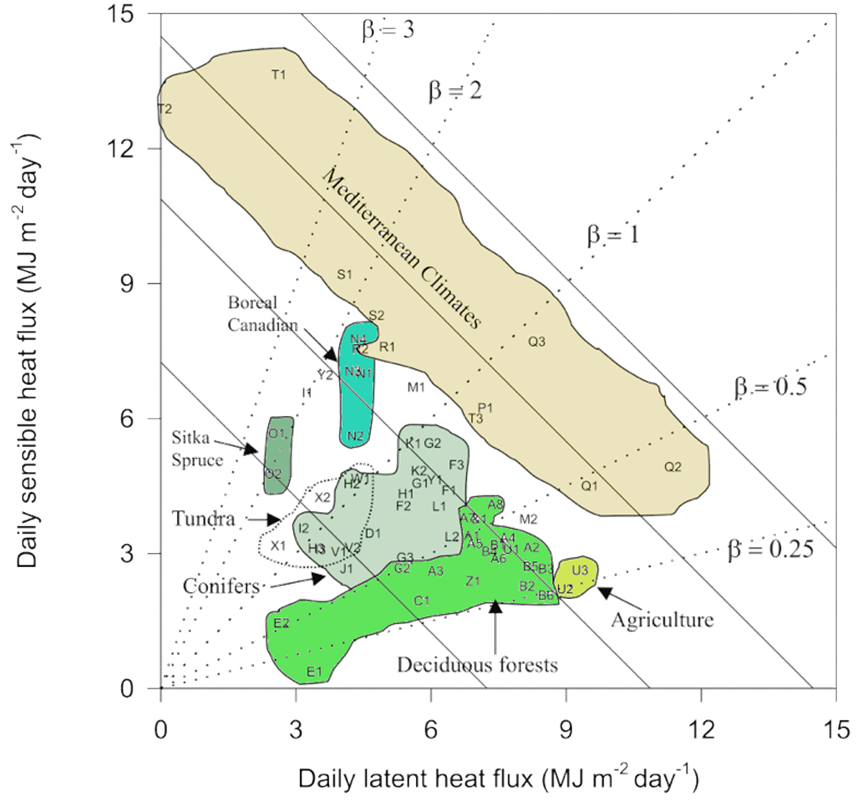
Wilson et al.. (2002). Water Res. Research, 38 (12)
Water balance of plant canopies
Inside a canopy there are significant air, soil, and plant flows
Re-distribution of water and temporary water storage (on leaves, in plants, soils, surface)
The plant structure can cause atmospheric water to condense
Water vapour is released from plant into atmosphere
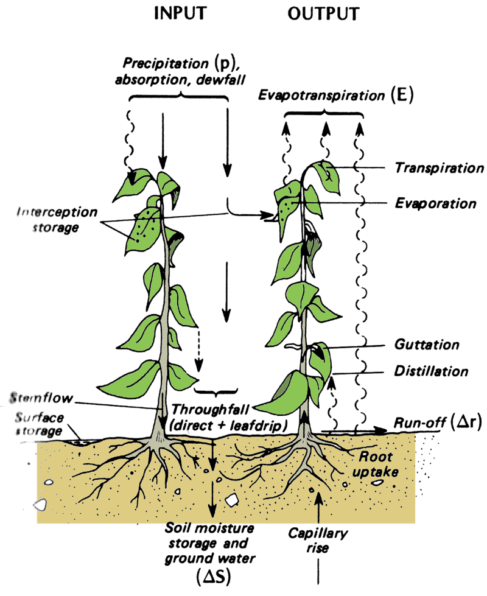
Oke, 1987
Throughfall (\(P_T\))
Precipitation directly falling through the canopy or deflected by the tree crowns reaching the ground.
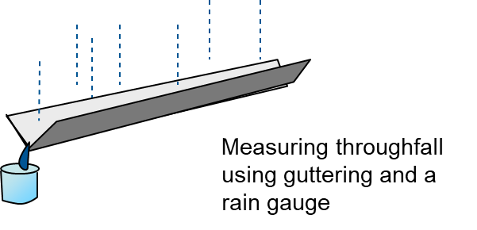
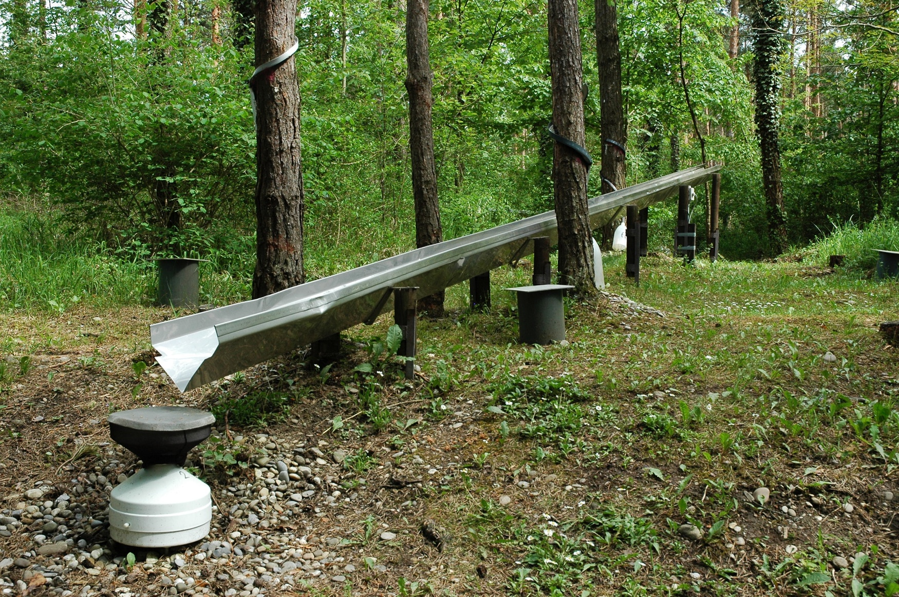
Photo: A. Christen
Canopy Drip
A special case of throughfall:
Coniferous trees prefer to direct water to the edge of the tree, due to their characteristic shape.
Causes, \(\theta_W\) is increased in a ring around a tree, while reducing \(\theta_W\) at base of tree
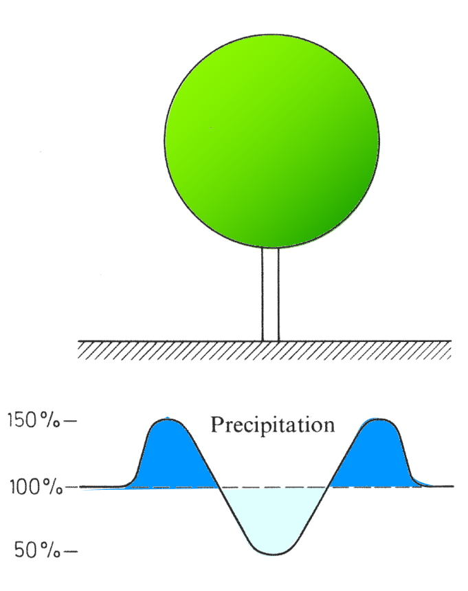
J. Seemann, et al. (1979): “Agrometeorology”, Springer.
Stem Flow (\(P_S\))
Process where water is drained along leaves / branches, and directed to the stem
Increased \(\theta_w\) close to the stem
Common strategy for plants in drier ecosystems
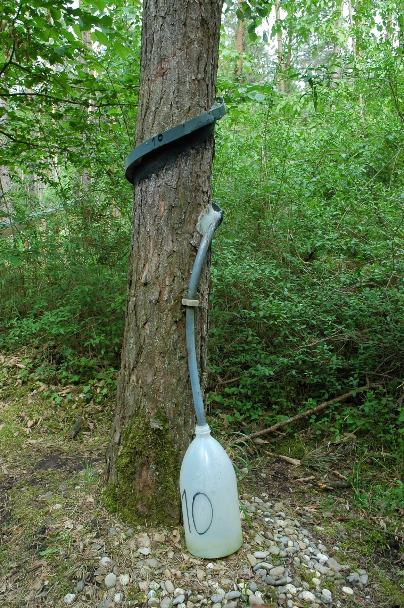
Measurement of stem flow, Photo: A. Christen
Interception (PI)
Water form a precipitation event that remains on the surface of the plant
Evaporates or drips down to the ground later
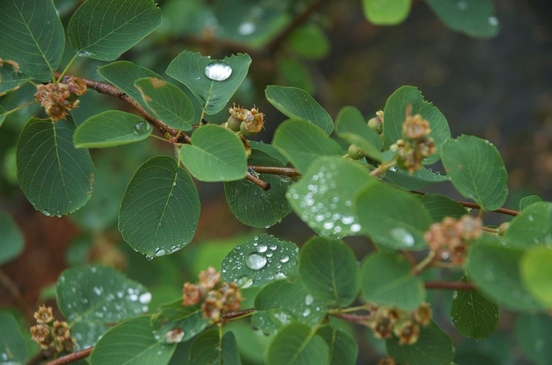
Photo: A. Christen
Interception vs. Precipitation
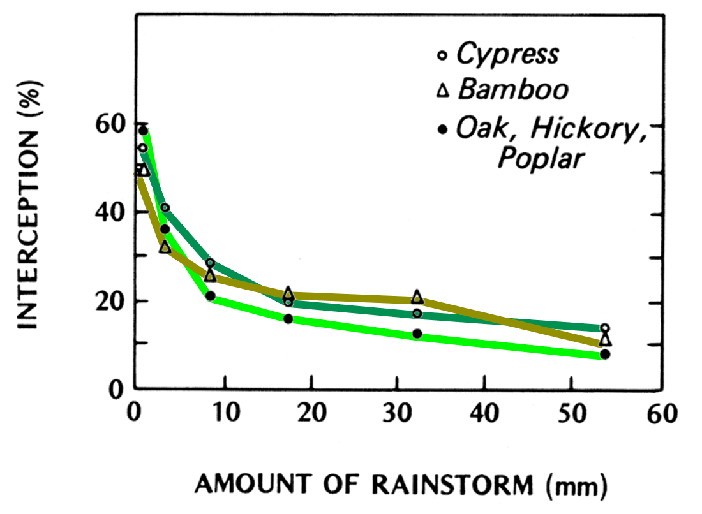
Interception for different trees and intensities of rainfall events Oke, 1987
Partitioning Precipitation
For the partitioning of P in a vegetation canopy: \(P = P_T + P_S + P_I\)
Table 2: Annual fractions of interception, stemflow and throughfall relative to total P. Average values based on 60 studies worldwide.
Forest type
Interception
Stemflow
Throughfall
Tropical rainforest
13%
2%
85%
Mediterranean forests
17%
2%
81%
Dry scrubland
17%
11%
72%
Deciduous forests
19%
7%
74%
Coniferous forests
20%
3%
77%
Take home points
Water at land-atmosphere interfaces can be balanced the same way we accounted for energy using a flux per unit area (resulting in mm per time).
Water balance and energy balance are linked through the latent heat flux / Evapotranspiration (by latent heat of vaporization, \(LE = L_v E\)).
The three-dimensional structure of a plant canopy causes vertical differences in the input, storage and re-distribution of water (throughfall, interception, stem flow, fog drip).